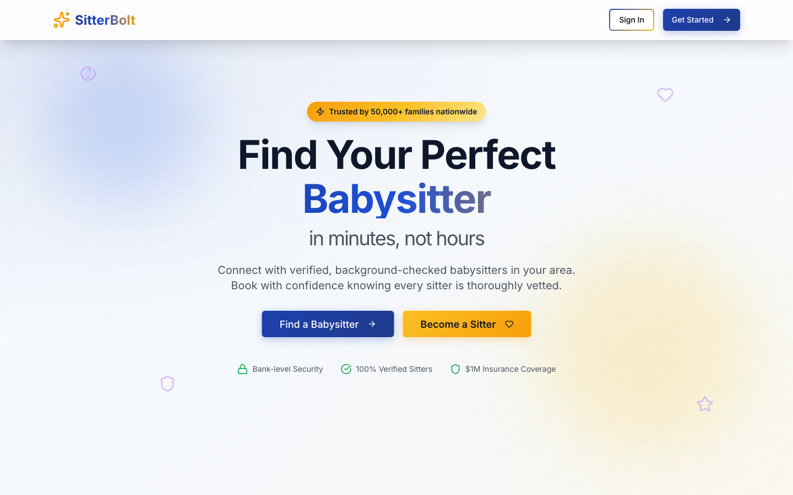

2026 · Concept
SitterBolt
A two-sided marketplace for babysitting. The hardest thing to design here isn't the booking flow — it's the fold, because a parent handing over their child needs the safety answer before anything else.

Every element in the fold is trust work
- Both sides get a button. "Find a Babysitter" in blue, "Become a Sitter" in amber, side by side and equally sized. A marketplace that only courts demand starves.
- The proof row is specific. Bank-level security, 100% verified sitters, $1M insurance coverage — three concrete claims, each with an icon, sitting directly under the buttons where hesitation happens.
- The headline names the pain, not the product. "in minutes, not hours" is the actual complaint about arranging childcare.
- Warm gradient, not clinical white. Blue-to-cream with faint line-art icons drifting in the background. It reads as domestic rather than institutional, which matters for the category.
- Blue for parents, amber for sitters. The two-colour split is used consistently for the two audiences throughout the page.
A concept build. The figures on the page — 50,000+ families, the insurance amount — are placeholders for a real business's numbers, not claims about an operating service.